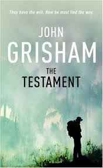

Title:THE FIRM Author:John Grisham Description:The Firm is a story by John Grisham which starts with Mitch McDeere, a
young ambitious lawyer
getting ready to graduate from Harvard Law School,He is offered jobs by a
few law firm, but
is ultimately won over by a law firm in Memphis, Tennessee Bendini,
Lambert & Locke
Mitch and his wife, Abby, fly to Memphis, where
gets a tour of the firm, By the end of his meeting with Lamar Quin a
senior member he knows that Bendini, Lambert & Locke is the place for
him.

Title:THE TESTEMANT Author: John Grisham Description:The Testament written by John Grisham is a story Eccentric billionaire
leaves all his money to an illegitimate child Rachel no one knew
about His six grandchildren are greedy idiots who hire attorneys to
contest the will. Josh is
of the will. He needs someone to go to the jungles of Brazil to find
Rachel who is working with tribes as a Christian missionary. Josh
asks Nate to go. Nate was a high-powered litigator who has been in
rehab several times for alcohol and cocaine. He is twice divorce
with kids he never sees. The IRS wants to put him in jail for tax fraud
He is close to the end of his current rehab stay, but he leaves to go to
Brazil.
Title:THE RECKONING Author:John Grisham Description:The Reckoning by John Grisham is about Pete Banning was Clanton,
Mississippis favorite son a decorated World War II hero, the
patriarch of a prominent family, a farmer, father
neighbor, and a faithful member of the Methodist church Then one cool
October morning he rose early, drove into town, and committed a
shocking
crime. Pete's only statement about it—to the sheriff, to his lawyers, to
the judge
to the jury, and to his family—was: "I have nothing to say." He was not
afraid of death and was willing to take his motive to the grave.
Title:THE CONFESSION Author:John Grisham Description:
The Confession written by John Grisham....In 1998 in the small East Texas
city of Sloan Travis Boyette abducted, raped, and strangled a popular
high school cheerleader. He buried her body so that
it would never be found, then watched in amazement as police and
prosecutors arrested and convicted Donté Drumm
a local football star, and marched him off to death row. Now nine years
have passed
Travis has just been paroled in Kansas for a different crime; Donté is
four days away from his execution. Travis suffers from an inoperable
brain tumor For the first time in his miserable life, he decides to
do what is right and confess
But how can a guilty man convince lawyers, judges, and politicians that
they are about to execute an innocent man?
Title:THE BROKER Author:John Grisham Description:The broker written by John Grisham....In his final hours in the Oval
Office, the outgoing President grants a controversial last-minute pardon
to Joel Backman, a notorious Washington power broker who has spent the
last six years hidden away in a federal prison. What no one knows is that
the President issues the pardon only after receiving enormous pressure
from the CIA. It seems Backman, in his power broker heyday, may have
obtained secrets that compromise the world's most sophisticated satellite
surveillance system.